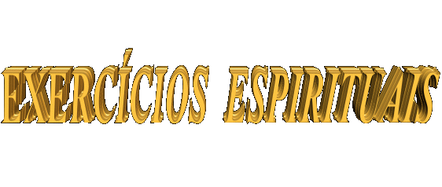
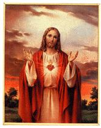
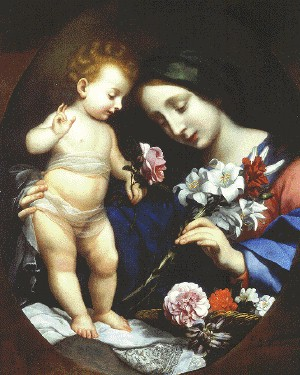
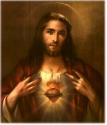

 - OBRAS DO ESPIRITO - Os Exercícios Espirituais devem
ocupar uma posição proeminente na vida de todas as
- OBRAS DO ESPIRITO - Os Exercícios Espirituais devem
ocupar uma posição proeminente na vida de todas as
criaturas, considerando que são necessários a forjar almas perseverantes no
ideal cristão e na disposição de sempre servir, principalmente exercitando com
atenção e disponibilidade a "caridade", em favor daqueles que esperam e
necessitam de qualquer tipo de ajuda. As pessoas para serem completas, não podem
deixar de cultivar os dons do espírito, porque eles elevam as criaturas a um
plano Divino, completando e dando sentido a existência humana, na medida em que
através deles, cada ser é convidado a procurar normalizar a sua existência,
atendendo com a mesma atenção às exigências e necessidades de seu corpo e da
alma. Isto porque, somente atendendo igualmente as necessidades de nosso corpo e
de nossa alma, é que conseguiremos viver "integralmente" em
"plenitude", e assim, conseguiremos impor domínio sobre a nossa
própria vontade e ser livre para buscar decididamente a conversão do coração.
Por isso mesmo, com a intenção de colaborar de
maneira concreta, objetivando que as pessoas vençam as suas dificuldades no
cotidiano e procurem trilhar uma trajetória de santidade, a fim de poderem
ultrapassar os obstáculos da caminhada, alcançando êxito nos empreendimentos e
alegria no viver, recomendamos o cultivo intenso dos Exercícios Espirituais,
porque eles são o meio seguro de se conseguir a amizade do CRIADOR
e manter-se unido a ELE. Isto porque, DEUS é necessário
à vida de todos nós. As pessoas não têm recursos para sozinhas enfrentarem as
dificuldades visíveis e invisíveis da vida, que ocorrem em nossa existência. A
experiência nos ensina que a inteligência e a força humana não conseguem por
mais hábil e astuciosa que seja vencer sozinha a maioria das dificuldades
visíveis, e jamais conseguem ultrapassar qualquer obstáculo invisível,
constituído por barreiras e ciladas que não vemos e são arquitetadas
traiçoeiramente pelo maligno!...
Somente esta realidade é suficiente para
convencer as pessoas, inclusive os corações mais rebeldes, de que o SENHOR
é necessário a nossa vida, para podermos alcançar o equilíbrio espiritual e a
felicidade existencial. Por isso, devemos procurar a ajuda de DEUS,
porque verdadeiramente, somente ELE poderá ajudar-nos a ultrapassar todas
as dificuldades e preservar a nossa integridade física, protegendo nosso corpo e
nossa alma, para sairmos ilesos dos problemas que surgem. Assim sendo, se temos
o auxílio Divino, estaremos indubitavelmente protegidos contra as tramas
visíveis e invisíveis urdidas por Satanás e seus asseclas, porque se somos
amigos do SENHOR, ELE não permitirá que as forças do mal ocupem o
nosso espírito, assim como, derramará inspiração em nossa existência, nos
momentos mais necessários, concedendo sabedoria e discernimento ao nosso
espírito, para ultrapassarmos as crises e resolvermos os problemas cotidianos.
Significa dizer, que cultivar a amizade do
CRIADOR, é a maneira mais inteligente para se viver bem, porque além de
ficarmos ao lado da justiça, da misericórdia e do amor de DEUS, teremos o
auxílio e a proteção Divina, indispensáveis para cumprirmos a missão existencial
e não sermos destruídos pelas ciladas de Satanás.
São diversos os tipos de Exercícios
Espirituais, dos quais a seguir evidenciaremos os principais, que colocam as
pessoas na presença de DEUS.
- LEITURA BÍBLICA
- A Bíblia é o livro sagrado da religião católica, é a palavra
do próprio DEUS. É constituída por um conjunto de 73 livros, sendo 47 do
Antigo Testamento e 26 livros do Novo Testamento. Embora o SENHOR não
escrevesse diretamente nenhuma palavra, inspirou os escritores com palavras
certas e adequadas, a fim de que eles descrevessem os fatos com autenticidade e
manifestassem a Vontade Suprema do CRIADOR. Por este motivo, é necessário
e importante que as pessoas adquiram o hábito de ler a Sagrada Escritura,
procurando entender e meditar sobre o texto inspirado, porque eles são na
verdade, Palavra e Inspiração Divina para a nossa vida. Por outro lado, o hábito
de ler e pesquisar a Sagrada Escritura ensejará um melhor e mais profundo
conhecimento de DEUS, além de iluminar a mente com ensinamentos e
esclarecimentos para o cotidiano, permitindo inclusive, que sejam exauridos
conselhos e inspiração Divina, para a vida particular das pessoas, para o
trabalho, para soluções domésticas, derramando uma luz preciosa que ilumina
decisões e nos revela a melhor trajetória. Da mesma forma, os versículos
sagrados atuam também como um bálsamo, como palavras de consolo
e confiança, que geram uma imensa paz no coração.
- ORAÇÃO - Rezar é conversar com DEUS, é segredar-LHE
os anseios, projetos, aflições, angústias e necessidades de cada dia. Depois, confiantemente,
com espírito de fé e esperança, aguardar a manifestação da Vontade Divina, que sempre
será a melhor, porque ELE quer o nosso bem estar, mesmo que em algumas vezes a
vaidade humana sem compreender, 
sente-se ofendida quando vê
que suas súplicas tardam a chegar ou não são atendidas. Entretanto, mesmo assim,
a atitude correta do fiel é acreditar e esperar, porque o SENHOR sabe e realiza o
que é melhor para nós. Dessa forma, a atitude normal de um cristão consciente é ter
confiança na providência Divina e permanecer fiel em todas as ocasiões, mesmo
naquelas em que imaginamos sermos "esquecidos" pela Bondade
Infinita do SENHOR.
A oração pode ser padronizada como o PAI
NOSSO e a AVE MARIA, ou improvisada, com palavras saídas diretamente
do coração. Todavia, independentemente do modo escolhido, é necessário existir
uma fervorosa interiorização, como providência relevante, porque é um momento em
que a criatura estabelece uma comunhão pessoal com DEUS, e então deverá
ter a mente voltada para ELE, louvando e amando Aquele a Quem irá
dirigir as suas palavras repletas de amor e carinho na prece que irá pronunciar.
Entretanto, não deve causar preocupações e
temores, a procura da maneira de como rezar melhor. A oração deve ser simples e
acompanhada de atitudes modestas, sinceras e espontâneas. Cada criatura tem o
seu próprio jeito de falar e externar os seus sentimentos e afetividade.
Importante é não ser comodista, apressado e preguiçoso. E mais importante ainda,
é nunca deixar de rezar.
- A SANTA MISSA ou CELEBRAÇÃO EUCARÍSTICA
- É o memorial da Paixão, Morte e Gloriosa Ressurreição do SENHOR, momento
em que o fiel recebe em plenitude o próprio DEUS, em Corpo, Sangue, Alma e Divindade,
na Hóstia Consagrada, durante a Santa Comunhão, sacramento de força e vida para
alma dos cristãos e penhor de vida eterna. Disse o SENHOR:
"EU sou o pão vivo descido do Céu. Quem comer deste pão viverá
eternamente. O pão que EU darei é a Minha Carne para a vida do mundo” (Jo
6,54). Significa dizer, que a Santa Missa é a oração mais importante, porque
além da instrução e ensinamentos das leituras, nos dá o próprio DEUS,
criador de nossa própria existência.
É onde também, nossas orações alcançam
maior grandeza e intensidade, porque é o sacrifício da Nova Aliança feita com o
Sangue do SENHOR no Calvário, celebrada de modo incruento. JESUS a
vítima perfeita, está verdadeiramente presente em Corpo, Sangue, Alma e
Divindade, escondido nas aparências de pão e vinho, e se oferece a Si Mesmo
ao PAI ETERNO pelas mãos do sacerdote, seu ministro celebrante, como fez
na Última Ceia com os Apóstolos, em Jerusalém, quando celebrou a primeira Missa,
ao instituir a Sagrada Eucaristia. A Santa Missa é essencialmente o mesmo
sacrifício da Cruz, apenas no Gólgota foi cruento, com derramamento de sangue, e
no Altar é incruento, ou seja, sem o sofrimento real de CRISTO. No
momento da Consagração, acontece o fenômeno sobrenatural da "transubstanciação”,
ou seja, da transformação das espécies de pão e vinho, em Corpo, Sangue, Alma e
Divindade do SENHOR, embora sejam conservadas as aparências de pão e
vinho, autenticadas por uma quantidade notável de manifestações sobrenaturais,
nas quais o SENHOR prova de maneira impressionante e admirável, sua
Presença REAL na Sagrada Comunhão.
Assim sendo, a Hóstia Consagrada não é um
"Símbolo" da presença de JESUS, mas o próprio SENHOR presente em Corpo,
Sangue, Alma e Divindade, como sacramento de vida, para salvação da humanidade.
A Santa Missa, não é simplesmente a "lembrança" do derradeiro banquete, da
Última Ceia que o SENHOR participou em companhia dos Apóstolos, mas o
memorial da Paixão e do Sacrifício do FILHO DE DEUS, em beneficio de
todos nós. É a Presença Real e Adorável do SENHOR no meio do povo que
ELE mesmo criou, guia, sustenta, inspira e protege ao curso da existência, a
fim de que cada criatura possa sentir o prazer de viver, tenha condições de
cumprir com mais empenho e júbilo a missão de sua vida, construindo na
eternidade a morada definitiva e recebendo agora no presente, no tempo da
existência terrestre, o benefício paterno por sua fidelidade ao CRIADOR.
Sentimos a presença Divina na criação, na
natureza, pela graça e nos acontecimentos de cada dia. Todavia, foi através da
Sagrada Eucaristia a maneira que o SENHOR escolheu para permanecer junto
de nós. Um só Corpo e Sangue num Único e Mesmo DEUS: "... Minha Carne
é verdadeira comida e o Meu Sangue, verdadeira bebida. Quem come a Minha Carne e
bebe o Meu Sangue permanece em MIM e EU nele”. (Jo 6,55-56)
Ao longo da História do Cristianismo, sempre
existiram pessoas que não acreditam na Presença Real do SENHOR na Sagrada
Eucaristia. Por essa razão, mostrando que se preocupa com a salvação de todas as
suas criaturas, ELE nos revela através de Manifestações Sobrenaturais
maravilhosas, a fim de entendermos e acreditarmos no Mistério Divino, termos
maior fé e confiança nas Palavras DELE e em todas as ocasiões, buscarmos
refúgio e proteção no CORAÇÃO DO SENHOR. Em diversas oportunidades o
CRIADOR providenciou fatos extraordinários em diversos países, para provar a
Presença Real de JESUS na Sagrada Eucaristia. Somente para oferecer um
exemplo bem atual, citaremos Julia Kim, em Naju, na Coréia do Sul, que desde
1985 até a presente data, tem recebido a visita do SENHOR e de nossa
MÃE SANTÍSSIMA em notáveis encontros, quando acontecem surpreendentes
milagres eucarísticos, que tem causado assombro e espanto no mundo inteiro.
DEUS infinita bondade, excede a todos os limites concebíveis e imagináveis,
realizando encantadores Milagres, num esforço supremo de fazer com que as
criaturas acreditem e levem a sério, o Mistério Sobrenatural que acontece
durante a Santa Missa, quando as duas espécies de pão e vinho são transformadas
pelo ESPÍRITO SANTO no Corpo, Sangue, Alma e Divindade de NOSSO SENHOR
JESUS CRISTO. Julia ao receber a Sagrada Eucaristia, no momento da Comunhão,
a Hóstia colocada sobre a sua língua se transforma em Carne e Sangue
do SENHOR JESUS. O fenômeno foi filmado, fotografado, e presenciado por
milhares de pessoas: padres, freiras, leigos, homens, mulheres e até diante de
Sua Santidade o Papa João Paulo II. Pela clareza incontestável e autenticidade
do fato, sempre causa suspense e admiração, sugerindo-nos uma extrema tentativa
do SANTO PAI, como se fosse um impressionante e pungente grito do
CORAÇÃO DIVINO ao ouvido de nosso coração, nos convidando ao amor fraterno,
ao exercício honesto e sincero da fé, ao cultivo da justiça e da fidelidade aos
princípios cristãos, suplicando a todos os seus filhos que busquem a conversão
do coração, a fim de que sendo Sua semente, sejamos de fato à Sua imagem e à Sua
semelhança.
A Sagrada Comunhão é o centro da fé que
congrega os cristãos do mundo inteiro, em face da realidade que o SENHOR
JESUS está presente em Corpo, Sangue, Alma e Divindade na menor porção da
Hóstia e do Vinho Consagrados.
Por todas estas razões, a freqüência a Santa
Missa deve ser cultivada, como medida positiva que revela a nossa adoração
permanente ao SENHOR, a compreensão de nossos sentimentos e a verdadeira
conversão do coração.
E como é natural, participar da Santa Missa é
colocar-se na presença de DEUS. Então, o comportamento e as atitudes
devem ser revestidos do maior amor e respeito, assim como é necessário que o
fiel esteja em "estado de graça" , ou seja, penitenciado de todos os seus
pecados, a fim de poder receber dignamente o SENHOR DEUS na Sagrada
Comunhão.
- O SANTO TERÇO - A Reza do Rosário
ou do Santo Terço é uma prática que também deve ser cultivada diariamente com
fervor e interesse, porque embora constituído de orações simples, repetidas
quase mecanicamente, tem na sua simplicidade uma verdadeira força que afugenta
Satanás e seus asseclas. O Terço existe pela Vontade do SENHOR, que se
manifestou através de NOSSA SENHORA, em várias oportunidades,
demonstrando a sua utilidade e seu benefício aos fieis. Ao longo dos séculos
aconteceram notáveis fatos que atestam o valor insubstituível do Rosário, como
auxiliar preponderante para vencer as forças do mal. O poder dele é tão
impressionante que desperta no "Inimigo" reações as mais estranhas. Apenas com o
objetivo de exemplificar, registraremos aqui duas ocorrências bem atuais:
- Um membro do APOSTOLADO sensibilizado
pela grandeza do Amor de DEUS e a incomensurável bondade de nossa MÃE
SANTÍSSIMA, decidiu em companhia da esposa, rezar diariamente o Terço. O
casal começou as orações naquela noite do mês de Maio, ajoelhados diante da
imagem de NOSSA SENHORA. De súbito, ambos sentiram, ao mesmo
tempo, como se tivessem recebido um tapa na face. Pararam momentaneamente com a
oração e comentaram o fato. Sentiram que o rosto ficou rapidamente quente, mas
não doeu. Compreenderam então, que se tratava de uma ação de Satanás, e,
portanto, que eles estavam sendo atacados pelo maligno. Não se intimidaram,
sorriram para a imagem da VIRGEM MARIA e continuaram a oração
do Terço até o final. (Neste caso, a manifestação de satanás foi de inveja, de
não possuir alguém prostrado aos seus pés suplicando a sua amizade e o seu amor).
- Outro membro, tinha o hábito de rezar e
conduzir o Terço no bolso interno do lado esquerdo de seu blusão. Numa rua
próxima a sua residência, aconteceu uma perseguição de assaltantes por policiais.
Foram disparados tiros de ambos os lados. Uma bala alcançou-o e jogou-o ao solo.
No momento seguinte, levantou-se, levou a mão encima do lado esquerdo, lado do
coração, onde a bala tinha penetrado e observou: a bala penetrou queimando-lhe o
blusão e ali ainda estava, quente, bem quente, dentro do bolso, ligada ao Terço!...(O
"Terço" salvou a sua vida). Foi uma coincidência? Sim. Foi uma coincidência!
Mas "Quem" providencia as coincidências?
- VIA SACRA - Encerramos esta pequena exposição,
recomendando o Exercício Espiritual da Via Sacra, que normalmente é rezado as
Quartas-feiras e Sextas-feiras no período da Quaresma. Todavia, por sua importância
e valor, deveria ser também rezada nos demais meses do ano, sempre que as pessoas
tivessem disposição, porque nos lembra o caminho da dor e do sofrimento de JESUS
no cumprimento de sua missão redentora, num gesto de profunda obediência ao
SANTO PAI e de infinito Amor às pessoas de todas as gerações. O SENHOR
veio até nós para consolar o CRIADOR por causa do Primeiro Pecado e dos
Pecados Subseqüentes, ou seja, por causa dos muitos pecados da humanidade, e nos
redimiu com o seu Sagrado e Precioso Sangue no alto do madeiro, abrindo para
todas as gerações as portas da eternidade. O caminho do Calvário que JESUS
percorreu e que nós vamos percorrendo ao longo de nossa vida, nos ensina que
para vencermos e realizarmos os nossos projetos precisamos ser perseverantes. As
dificuldades surgem no trajeto, mas se perseverarmos e alcançarmos o auxilio
Divino, o destino final é a vitória, como a Ressurreição Gloriosa do SENHOR.
Por isso mesmo insistimos, a Via Sacra deve ser rezada em qualquer época do ano
e primordialmente na Quaresma, por todos aqueles que se sentirem sensibilizados
a amenizar as dores do Redentor e quiserem se irmanar aos sofrimentos de
JESUS, penitenciando-se de suas próprias culpas e por causa de todas as
transgressões da humanidade.

 Retorna
ao Índice
Retorna
ao Índice